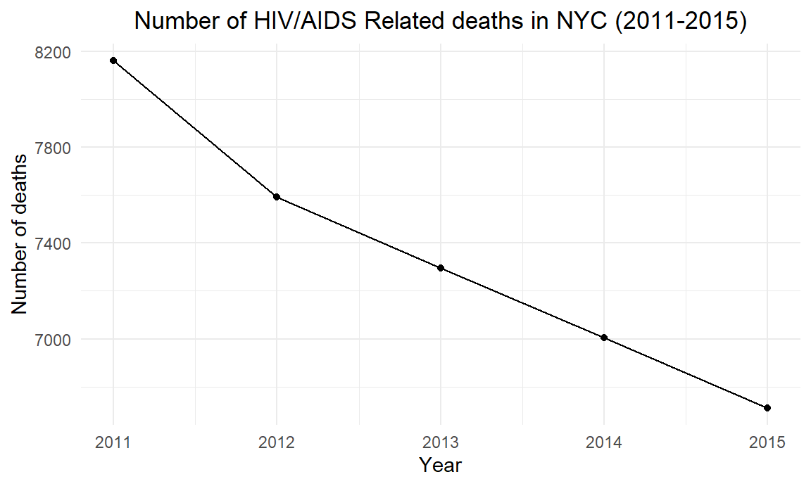
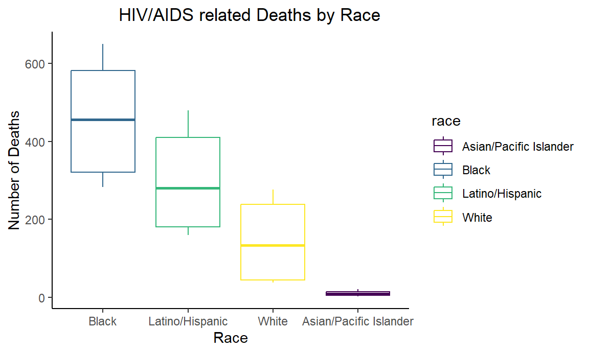
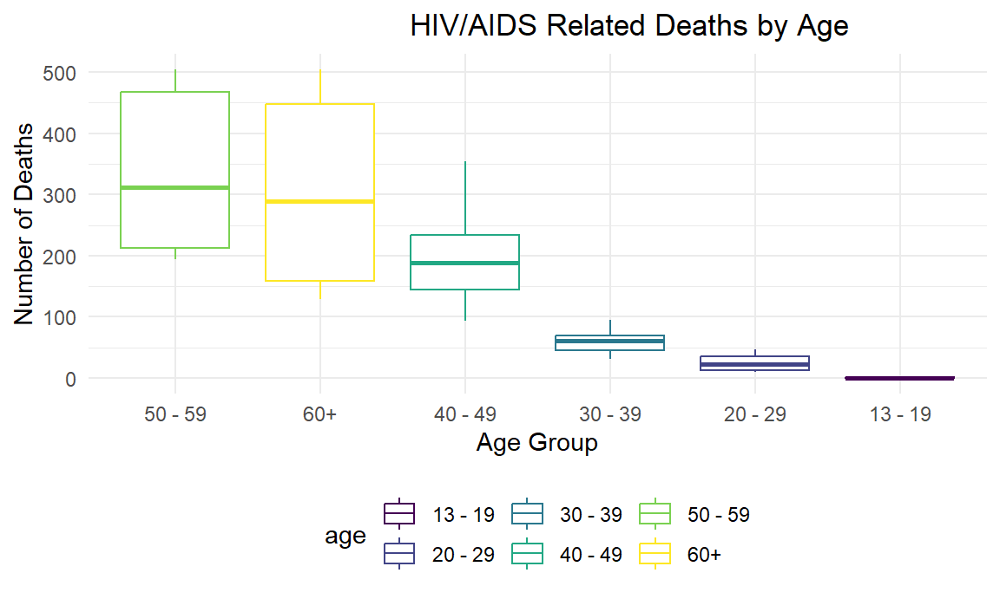
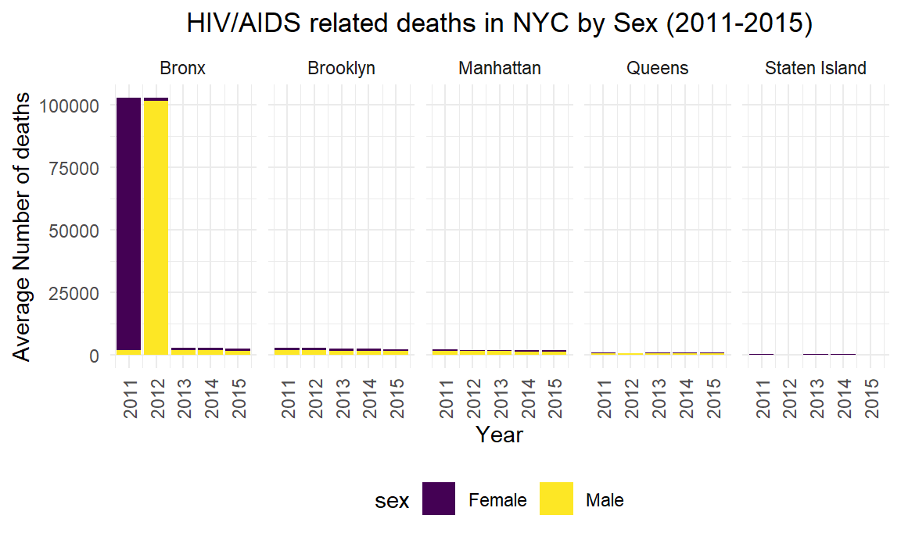

HIV/Aids Related Deaths in New York City
Exploring HIV/Aids Related Deaths in NYC by Race, Age, and Sex
#Number of HIV-related Deaths in NYC (2011-2015)
hiv_deaths = hiv_data %>%
filter(borough == "All") %>% # Filter hiv data by borough
select(.data = ., year, deaths) %>%
group_by(year) %>%
summarise(sum_deaths = sum(deaths))
ggplot(data=hiv_deaths, aes(x=year, y= sum_deaths, group=1)) +
geom_line() +
geom_point()+
labs (title = "Number of HIV/AIDS Related deaths in NYC (2011-2015)",
x = "Year",
y = "Number of deaths") +
theme(plot.title = element_text(hjust = 0.5))
The sharp decline in HIV/AIDs related mortality in NYC observed in our data coincides with USA’s mortality trends reported by the CDC in 2014. This steep decline in the registered number of deaths is explained by the significant scientific and medical advances in HIV diagnosis and treatment of early 2000. In 2011, a landmark research study showed that putting healthy individuals living with HIV on antiretrovirals can limit their virus transmission by 96%. The same FDA approved the first at-home HIV test, and considerable advances were made in treatment. NYC’s success in fighting the HIV/AIDS epidemic results from the courageous work of activists, medical advocates, scientists, and brave gay men and women throughout NYC and the world.
Not everyone has the same access to HIV/AIDS care and early
diagnosis, and access to medical services, in general, differs
substantially by race, income, and neighborhood. Therefore, in the
following sections, we will focus on our analysis of how the decline in
HIV/AIDS-related deaths varies by race, age,
and sex:
#Boxplot Hiv-Related Deaths by Race
hiv_data %>%
filter(race != "All" & race != "Other/Unknown") %>%
filter(year != "All") %>%
filter(borough == "All") %>%
select(.data = ., deaths, race, year) %>%
ggplot(aes(y = deaths, x = reorder(race, -deaths), color = race)) +
geom_boxplot() +
theme_classic() +
labs(x = "Race",
y = "Number of Deaths",
title = "HIV/AIDS related Deaths by Race") +
theme(plot.title = element_text(hjust = 0.7)) 
#Boxplot Hiv-related Deaths in NYCby Age
hiv_data %>%
filter(age != "All") %>%
filter(year != "All") %>%
filter(borough == "All") %>%
select(.data = ., deaths, age, year) %>%
ggplot(aes(y = deaths, x = reorder(age, -deaths), color = age)) +
geom_boxplot() +
labs(x = "Age Group",
y = "Number of Deaths",
title = "HIV/AIDS Related Deaths by Age") +
theme(plot.title = element_text(hjust = 0.7)) 
#Boxplot Hiv-related Deaths in NYC by Sex
hiv_data %>%
filter(sex != "All" & sex != "Transgender") %>%
filter(borough == "All") %>%
select(.data = ., deaths, sex, year) %>%
ggplot(aes(y = deaths, x = reorder(sex, -deaths), color = sex)) +
geom_boxplot() +
labs(x = "Sex",
y = "Number of Deaths",
title = "HIV/AIDS Related Deaths by Sex") +
theme(plot.title = element_text(hjust = 0.7)) 
Visualiazing HIV/Aids Related Deaths by NYC Borough
Now we will visualize the trends in number of HIV/AIDS related deaths
for each one of the five NYC borough:
#HIV-related deaths in NYC by race
hiv_data %>% # Filter hiv data by borough
filter(borough != "All") %>% # Filter hiv data by borough
filter(race != "All" & race != 'Other/Unknown') %>% # Filter hiv data by race
select(.data = ., year, deaths, race, borough) %>%
group_by(year, race, borough) %>%
summarise(sum_deaths = sum(deaths)) %>% #total number of deaths
ggplot(aes(x = year, y = sum_deaths, color = race)) +
geom_line() +
facet_grid(~borough) +
labs (title = "HIV/AIDS related deaths in NYC Boroughs by Race (2011-2015)",
x = "Year",
y = "Number of deaths") +
theme(axis.text.x = element_text(angle = 90, vjust = 0.5, hjust = 1)) +
theme(plot.title = element_text(hjust = 0.5)) 
#Number of HIV-related deaths in NYC by Age
hiv_data %>%
filter(age != "All") %>% # Filter hiv data by gender
filter(borough != "All") %>% # Filter hiv data by borough
select(.data = ., year, deaths, age, borough) %>%
#na_if(., 0) %>%
group_by(year, borough, age) %>%
summarise(sum_deaths = sum(deaths, na.rm = T)) %>%
ggplot(aes(x = year, y = sum_deaths, fill = age)) +
geom_bar(stat= "identity") +
facet_grid(~borough) +
labs(title = "HIV/AIDS related deaths in NYC by Sex (2011-2015)",
x = "Year",
y = "Average Number of deaths") +
theme(axis.text.x = element_text(angle = 90, vjust = 0.5, hjust = 1)) +
theme(plot.title = element_text(hjust = 0.5)) 
#Number of HIV-related deaths in NYC by Sex
hiv_data %>%
filter(sex != "All") %>% # Filter hiv data by gender
filter(sex != "Transgender") %>% # Filter hiv data by gender
filter(borough != "All") %>% # Filter hiv data by borough
select(.data = ., year, deaths, sex, borough) %>%
#na_if(., 0) %>%
group_by(year, borough, sex) %>%
summarise(sum_deaths = sum(deaths, na.rm = T)) %>%
ggplot(aes(x = year, y = sum_deaths, fill = sex)) +
geom_bar(stat= "identity") +
facet_grid(~borough) +
labs(title = "HIV/AIDS related deaths in NYC by Sex (2011-2015)",
x = "Year",
y = "Average Number of deaths") +
theme(axis.text.x = element_text(angle = 90, vjust = 0.5, hjust = 1)) +
theme(plot.title = element_text(hjust = 0.5)) 
Further Analysis
Fitting a SLR Model:
Analysing the relationship between race and HIV/AIDS related deaths in NYC
hiv_race_slr = lm(deaths ~ race, data = hiv_data)
hiv_race_result = hiv_race_slr %>%
broom::tidy() %>%
filter(p.value < 0.05) %>%
select(term, estimate, p.value) %>%
knitr::kable()
hiv_race_result | term | estimate | p.value |
|---|---|---|
| raceAsian/Pacific Islander | 397.0705 | 7.6e-06 |
Fitting a MLR Model:
Fitting a model to explain recent treands HIV/AIDS related deaths in NYC.
First, we fit a large model with the most relevant variables based on our previous analysis.
hiv_mlr = lm(deaths ~ race + age + sex + borough + concurrent_diagnoses + x_linked_to_care_within_3_months, data = hiv_data)
hiv_mlr_result = hiv_mlr %>%
broom::tidy() %>%
filter(p.value < 0.05) %>%
select(term, estimate, p.value) %>%
knitr::kable()
hiv_mlr_result | term | estimate | p.value |
|---|---|---|
| raceAsian/Pacific Islander | 342.8292358 | 0.0053898 |
| concurrent_diagnoses | 2.9625654 | 0.0112315 |
| x_linked_to_care_within_3_months | 0.0014284 | 0.0273417 |
Now we do backward elimitation, we take out nonsignificant variables one at a time starting with the highest p-value, and use Mallow’s CP Criterion and Adjusted R2 to guide our selection of the ‘best’ model.
#stepwise regression
step(hiv_mlr, direction='backward')
## Start: AIC=90191.31
## deaths ~ race + age + sex + borough + concurrent_diagnoses +
## x_linked_to_care_within_3_months
##
## Df Sum of Sq RSS AIC
## - age 6 909674 1.9869e+10 90180
## - sex 3 997471 1.9869e+10 90186
## <none> 1.9868e+10 90191
## - borough 5 40746316 1.9909e+10 90194
## - x_linked_to_care_within_3_months 1 16177167 1.9884e+10 90194
## - concurrent_diagnoses 1 21360316 1.9890e+10 90196
## - race 5 59806206 1.9928e+10 90199
##
## Step: AIC=90179.58
## deaths ~ race + sex + borough + concurrent_diagnoses + x_linked_to_care_within_3_months
##
## Df Sum of Sq RSS AIC
## - sex 3 999513 1.9870e+10 90174
## <none> 1.9869e+10 90180
## - borough 5 40397306 1.9910e+10 90182
## - x_linked_to_care_within_3_months 1 15443253 1.9885e+10 90182
## - concurrent_diagnoses 1 23411760 1.9893e+10 90185
## - race 5 64749655 1.9934e+10 90189
##
## Step: AIC=90173.88
## deaths ~ race + borough + concurrent_diagnoses + x_linked_to_care_within_3_months
##
## Df Sum of Sq RSS AIC
## <none> 1.9870e+10 90174
## - borough 5 39988975 1.9910e+10 90176
## - x_linked_to_care_within_3_months 1 14460483 1.9885e+10 90176
## - concurrent_diagnoses 1 27406144 1.9898e+10 90180
## - race 5 65090468 1.9935e+10 90184
##
## Call:
## lm(formula = deaths ~ race + borough + concurrent_diagnoses +
## x_linked_to_care_within_3_months, data = hiv_data)
##
## Coefficients:
## (Intercept) raceAsian/Pacific Islander
## -6.485764 374.364394
## raceBlack raceLatino/Hispanic
## 10.548203 8.979771
## raceOther/Unknown raceWhite
## -69.475026 -9.754990
## boroughBronx boroughBrooklyn
## 165.057577 -49.127609
## boroughManhattan boroughQueens
## -49.930218 -60.317252
## boroughStaten Island concurrent_diagnoses
## -68.978758 3.166299
## x_linked_to_care_within_3_months
## 0.001254
mallow_cp = ols_step_best_subset(hiv_mlr,cp)
mallow_cp
## Best Subsets Regression
## -----------------------------------------------------------------------------------------
## Model Index Predictors
## -----------------------------------------------------------------------------------------
## 1 race
## 2 race borough
## 3 race borough concurrent_diagnoses
## 4 race borough concurrent_diagnoses x_linked_to_care_within_3_months
## 5 race sex borough concurrent_diagnoses x_linked_to_care_within_3_months
## 6 race age sex borough concurrent_diagnoses x_linked_to_care_within_3_months
## -----------------------------------------------------------------------------------------
##
## Subsets Regression Summary
## -----------------------------------------------------------------------------------------------------------------------------------------------------------
## Adj. Pred
## Model R-Square R-Square R-Square C(p) AIC SBIC SBC MSEP FPE HSP APC
## -----------------------------------------------------------------------------------------------------------------------------------------------------------
## 1 0.0035 0.0027 -6e-04 7.9630 107228.7597 90179.3053 107275.6622 19961112928.7301 3327406.3534 554.1984 0.9971
## 2 0.0058 0.0041 -1e-04 -3.3876 107225.4032 90167.9608 107305.8074 19920082901.6643 3323336.2323 553.5205 0.9952
## 3 0.0070 0.0052 0.0012 -9.0705 107219.7032 90162.2743 107306.8078 19897872379.3683 3320183.9555 552.9956 0.9943
## 4 0.0077 0.0058 0.0012 -11.4251 107217.3347 90159.9187 107311.1396 19886716709.5465 3318875.3780 552.7778 0.9939
## 5 0.0078 0.0053 9e-04 -9.7261 107223.0326 90161.6244 107336.9385 19889031754.5781 3320923.3075 553.1191 0.9942
## 6 0.0078 0.0044 8e-04 -8.0000 107234.7577 90163.3574 107388.8657 19891437515.1988 3324654.4748 553.7408 0.9945
## -----------------------------------------------------------------------------------------------------------------------------------------------------------
## AIC: Akaike Information Criteria
## SBIC: Sawa's Bayesian Information Criteria
## SBC: Schwarz Bayesian Criteria
## MSEP: Estimated error of prediction, assuming multivariate normality
## FPE: Final Prediction Error
## HSP: Hocking's Sp
## APC: Amemiya Prediction CriteriaLastly, we test the model predictive ability using a 10-fold cross-validation.
library(caret)
set.seed(1)
# Use 10-fold validation and create the training sets
train = trainControl(method = "cv", number = 10)
# Fit the 4 -variables model that we selected: murder, hs_grad, frost
model_caret = train(deaths ~ age + sex + borough + concurrent_diagnoses + x_linked_to_care_within_3_months,
data = hiv_data,
trControl = train,
method = 'lm',
na.action = na.omit)
model_caret$hiv_mlr
## NULL
summary(model_caret)
##
## Call:
## lm(formula = .outcome ~ ., data = dat)
##
## Residuals:
## Min 1Q Median 3Q Max
## -383 -122 -4 45 99647
##
## Coefficients:
## Estimate Std. Error t value Pr(>|t|)
## (Intercept) -2.446e+01 2.522e+02 -0.097 0.92273
## `age20 - 29` 3.796e+01 1.189e+02 0.319 0.74954
## `age30 - 39` 3.980e+01 1.191e+02 0.334 0.73813
## `age40 - 49` 4.394e+01 1.190e+02 0.369 0.71200
## `age50 - 59` 4.639e+01 1.185e+02 0.391 0.69552
## `age60+` 2.398e+01 1.178e+02 0.204 0.83872
## ageAll 9.182e+01 9.041e+01 1.016 0.30988
## sexFemale -2.853e+00 1.311e+02 -0.022 0.98263
## sexMale 2.863e+01 1.284e+02 0.223 0.82357
## sexTransgender -6.925e+01 8.493e+02 -0.082 0.93501
## boroughBronx 1.285e+02 1.975e+02 0.651 0.51518
## boroughBrooklyn -8.756e+01 1.948e+02 -0.449 0.65309
## boroughManhattan -8.914e+01 1.959e+02 -0.455 0.64906
## boroughQueens -1.017e+02 1.964e+02 -0.517 0.60484
## `boroughStaten Island` -1.148e+02 2.054e+02 -0.559 0.57616
## concurrent_diagnoses 2.792e+00 1.150e+00 2.429 0.01517 *
## x_linked_to_care_within_3_months 1.589e-03 5.842e-04 2.719 0.00656 **
## ---
## Signif. codes: 0 '***' 0.001 '**' 0.01 '*' 0.05 '.' 0.1 ' ' 1
##
## Residual standard error: 1824 on 5988 degrees of freedom
## Multiple R-squared: 0.004856, Adjusted R-squared: 0.002197
## F-statistic: 1.826 on 16 and 5988 DF, p-value: 0.02275The best fit model is:
The resulting model from our model selection has 4 predictors: age, sex, borough, concurrent diagnosis, and reciving treatment within 3 months of diagnosis. Race was not included as a predictor. The results of this 10-fold cross-validation indicate a low RMS of 0.921, which suggests that the model is accurate, and the R2 is 0.92, which means that the selected model can explain about 92% of the variation in HIV/AIDS related deaths.
Results and Interpretation
There has been a sharp decline in HIV/AIDs related mortality in NYC. This steep decline is explained by the significant scientific and medical advances in HIV diagnosis and treatment in early 2000. However, the general trends in the city vary significantly by race/ethnicity and borough. Black and Latino men continue to be disproportionately burdened by HIV/AIDS. The number of HIV/AIDS-related deaths is significantly higher in Brox, Brooklyn, and Queens, predominantly black and Latino boroughs, compared to Manhattan and Staten Island. However, our SLR and MLR indicate that these differences aren’t explained by race but are primarily driven by other socioecnomic factors, such as borough of residence and access to early HIV treatment. This result suggests that differences observed by race/ethnicity in HIV/AIDs deaths could result from inequities in access to medical care, information, and resources available in each NYC borough.